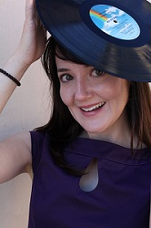
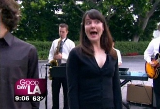
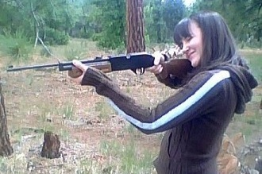

JEN BURTON
Actor

Jen Burton is a graduate of the UCLA Theater Department and trained with The Groundlings and Upright Citizens' Brigade in Los Angeles. She performed for two years at the internationally acclaimed Boom Chicago Comedy Theater in Amsterdam, where she learned three words of Dutch and wrote and performed for Comedy Central Holland. She has performed at Improv Olympic and Second City, and is a member of the teaching staff at Westside Comedy in Santa Monica. Her television credits include The Office, Criminal Minds: Suspect Behavior, Joey, and a flight to New York by NBC to audition for Saturday Night Live (not a credit, but close! So close!) She is currently performing at Westside Comedy Theater with Mission IMPROVable, around Los Angeles with the improv group Jerk Circus, and on the internet with the sketch group Titled Sketch Project. In case this isn't enough information, check out her website at www.jenniferannburton.com. She's very proud to be a member of Lost Moon Radio, and hopes they never discover how little she knows about politics.
Jen in Action...

Performing "Free to Be Repressed" on Good Day LA.

Dealing with a heckler.